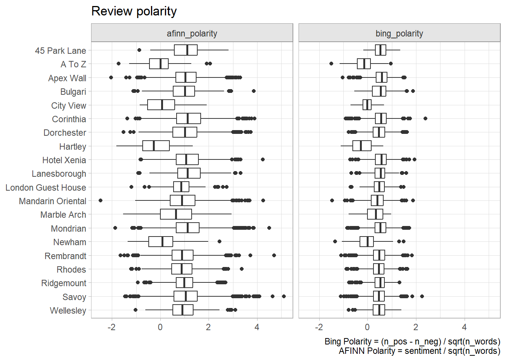

3.2 Polarity Scoring
Two packages measure text polarity. The simpler one tidytext: unnest tokens, join to the Bing lexicon, and calculate the net of positive minus negative polarity counts. sentimentr is more sophisticated in that it takes into account valence shifters, surrounding words that change the intensity of a sentiment (e.g., “very”) or switch its direction (e.g., “not”).3
3.2.1 tidytext
The tidytext way to score polarity is to tag words as “positive” and “negative” using the Bing lexicon, then calculate the difference in counts. The qdap and sentimentr packages correct for text length by dividing by \(\sqrt{n}\). It is useful to capture the positive and negative words back in the main data frame for explaining how the polarity score was calculated.
polarity_bing <-
token %>%
left_join(bing, by = "word", relationship = "many-to-one") %>%
summarize(.by = c(review_id, sentiment), n = n(), words = list(word)) %>%
pivot_wider(names_from = sentiment, values_from = c(n, words),
values_fill = list(n = 0)) %>%
select(-c(n_NA, words_NA)) %>%
inner_join(hotel_0 %>% select(review_id, word_cnt), by = "review_id") %>%
mutate(
polarity = (n_positive - n_negative) / sqrt(word_cnt),
polarity_desc = if_else(polarity >= 0, "Positive", "Negative")
)
polarity_bing %>% filter(review_id == 520)## # A tibble: 1 × 8
## review_id n_positive n_negative words_positive words_negative word_cnt
## <int> <int> <int> <list> <list> <int>
## 1 520 0 0 <NULL> <NULL> 47
## # ℹ 2 more variables: polarity <dbl>, polarity_desc <chr>polarity_afinn <-
token %>%
inner_join(afinn, by = "word", relationship = "many-to-one") %>%
summarize(.by = review_id, sentiment = sum(value), words = list(word)) %>%
inner_join(hotel_0 %>% select(review_id, word_cnt), by = "review_id") %>%
mutate(
polarity = sentiment / sqrt(word_cnt),
polarity_desc = if_else(polarity >= 0, "Positive", "Negative")
)
# Attach to main data frame
hotel_1 <-
hotel_0 %>%
left_join(polarity_bing %>%
select(review_id, polarity, words_positive, words_negative) %>%
rename_with(~paste0("bing_", .x)),
by = join_by(review_id == bing_review_id)) %>%
left_join(polarity_afinn %>%
select(review_id, polarity) %>%
rename_with(~paste0("afinn_", .x)),
by = join_by(review_id == afinn_review_id))Let’s see how the polarity scores compare.
hotel_1 %>%
pivot_longer(cols = c(bing_polarity, afinn_polarity),
names_to = "lexicon", values_to = "polarity") %>%
filter(!is.na(polarity)) %>%
ggplot(aes(x = polarity, y = fct_rev(property))) +
geom_boxplot() +
facet_wrap(facets = vars(lexicon)) +
labs(title = "Review polarity", x = NULL, y = NULL,
caption = glue::glue("Bing Polarity = (n_pos - n_neg) / sqrt(n_words)\n",
"AFINN Polarity = sentiment / sqrt(n_words)"))
The two lexicons are similar. The data set includes a numeric rating review_rating (1-5). I’ll stick with Bing going forward for convenience. The polarity score should correlate with the numeric rating.
hotel_1 %>%
filter(!is.na(bing_polarity)) %>%
ggplot(aes(x = as_factor(rating), y = bing_polarity)) +
geom_jitter(width = 0.2, alpha = 0.3, color = "#5DA5DA", size = 1) +
geom_boxplot(alpha = 0) +
theme_minimal() +
labs(title = "Polarity is associated with overall Likert score",
x = "Overall Likert Rating", y = "Polarity Score")
Sentiment increases with Likert rating, but there are many reviews with a rating of 5 and a polarity score <0. In some cases this is because the reviewer interpreted the scale incorrectly. You can use polarity scores to identify problematic reviews like these.
hotel_1 %>%
mutate(
problematic = case_when(
(rating == 1 & bing_polarity > 0.5) ~ "Too Low",
(rating == 5 & bing_polarity < -.5) ~ "Too High",
TRUE ~ "Other"
)
) %>%
filter(problematic %in% c("Too High", "Too Low")) %>%
group_by(problematic) %>%
slice_max(order_by = abs(bing_polarity), n = 1) %>%
select(problematic, rating, bing_polarity, review) %>%
flextable::flextable() %>%
flextable::autofit() %>%
flextable::valign(valign = "top")problematic | rating | bing_polarity | review |
|---|---|---|---|
Too High | 5 | -0.9801961 | Some design faults in the bathroom - no stool, misplaced grab handles and vanity mirror. Very disappointing experience in Savoy Grill. Good quality ingredients but poorly presented and tasteless. Numerous mistakes in service including charging for expensive drinks which we did not have. Service charge revoked and booking for following night cancelled. |
Too Low | 1 | 0.8728716 | Stayed here many times both for business and pleasure, alone, with my wife and even with extended family and children. It is in fact impossible to seperate the business and pleasure stays because everytime was a breathtakingly delectable pleasure. Meeting friends and colleagues whether in the lobby one of the resturants always left an impressive memorable impression. Alas, I haven't been able to visit again for sometime - either fully booked or are not able to guarantee convenient parking for my personal chauffeur and car. |
The polarity words can help explain why some hotels rated poor or excellent.
token %>%
inner_join(hotel_1 %>% filter(rating %in% c(1, 5)), by = join_by(review_id)) %>%
filter(!word %in% c("hotel", "stay", "night")) %>%
filter((rating == 5 & bing_polarity > 0) |
(rating == 1 & bing_polarity < 0)) %>%
count(rating, word) %>%
mutate(.by = rating, pct = n / sum(n)) %>%
group_by(rating) %>%
slice_max(order_by = pct, n = 10) %>%
ggplot(aes(x = pct, y = reorder_within(word, by = pct, within = rating))) +
geom_col() +
scale_y_reordered() +
scale_x_continuous(labels = percent_format(1)) +
labs(y = NULL, x = NULL) +
facet_wrap(facets = vars(rating), scales = "free_y")
Word clouds are a nice way to get an overview of the data.
token %>%
inner_join(hotel_1 %>% filter(rating %in% c(1, 5)), by = join_by(review_id)) %>%
filter(!word %in% c("hotel", "stay", "night", "london"),
!is.na(bing_polarity)) %>%
mutate(polarity_desc = if_else(bing_polarity > 0, "Positive", "Negative")) %>%
count(word, polarity_desc, wt = word_cnt) %>%
pivot_wider(names_from = polarity_desc, values_from = n, values_fill = 0) %>%
data.table::data.table() %>%
as.matrix(rownames = "word") %>%
wordcloud::comparison.cloud(max.words = 30, title.size = 1.5, scale = c(1, 3.5))
3.2.2 sentimentr
sentimentr calculates polarity at the sentence level. It improves on tidytext in that it takes into account the context in which the sentiment words occur by incorporating valence shifters.
- A negator flips the direction of a polarizing word (e.g., “I do not like it.”).
lexicon::hash_valence_shifters[y==1]. - An amplifier intensifies the impact (e.g., “I really like it.”).
lexicon::hash_valence_shifters[y==2]. - A de-amplifier (downtoner) reduces the impact (e.g., “I hardly like it.”).
lexicon::hash_valence_shifters[y==3]. - An adversative conjunction overrules the previous clause containing a polarized word (e.g., “I like it but it’s not worth it.”).
lexicon::hash_valence_shifters[y==4].
sentimentr uses a lexicon package combined from the syuzhet and lexicon packages. Positive words are scored +1 and negative words are scored -1. sentimentr identifies clusters of words within sentences of the text. The 4 words before and 2 words after are candidate valence shifters. Polarized words are weighted by the valence shifter weights: negators = -1; amplifiers and de-amplifiers = 1.8; adversative conjunctions decrease the value of the prior cluster and increase the value of the following cluster. Neutral words hold no value, but do affect the word count.
hotel_sentimentr <-
sentimentr::get_sentences(hotel_1$review) %>%
sentimentr::sentiment() %>%
summarize(.by = element_id, sentimentr_polarity = mean(sentiment))
hotel_2 <-
hotel_1 %>%
mutate(element_id = row_number()) %>%
inner_join(hotel_sentimentr, by = join_by(element_id)) %>%
select(-element_id)Let’s see a few examples where sentimentr differed from tidytext. Looks like bing did a better job on the first one, but sentimentr was better on the next two.
hotel_2 %>%
filter((bing_polarity > 0.2 & sentimentr_polarity < -0.2) |
(bing_polarity < -0.2 & sentimentr_polarity > 0.2)) %>%
select(review, bing_polarity, sentimentr_polarity) %>%
head(3) %>%
flextable::flextable() %>%
flextable::autofit()review | bing_polarity | sentimentr_polarity |
|---|---|---|
We were locked out of our room twice in a 3 day stay due to the Savoy not being able to track our reservation - the excuses included that we were responsible until they finally admitted their system is fouled up | -0.3162278 | 0.2161730 |
For many years I had fantasised about staying at The Dorchester so when the opportunity arose I jumped at it. Needless to say, as one of the great British institutions, it's a lovely hotel however it is not fabulous. It has two lovely dining areas /restaurants albeit pricey. I was extremely disappointed by the rooms! The corridors were creaky and narrow and the rooms pokey. There's no doubt it was tasteful decorated, however I was noisy -if the internal door wasn't shut and space was tight with a capital T. The double bed was very compact for 2, there was hardly any space to walk around it! Very claustrophobic! On a positive note the bathroom was spacious with delicious toiletries and good high pressure hot showers - and it you are a lover of hotel slippers- this one was good quality. All in all - charming but not worth the price or reputation- that is in the standard rooms. A word of advise- don't take your car! | 0.4670994 | -0.2377933 |
Wonderful. Far better than The Ritz (slow and stiff) and Harvey Nichols (noisy and showy). The service is unsurpassable. Extensive range of teas. Enough food to make dinner unnecessary. Relaxed and unhurried atmosphere. I'm already looking forward to coming back. | -0.4743416 | 0.2145884 |